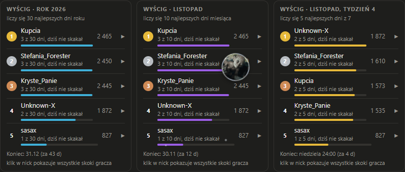
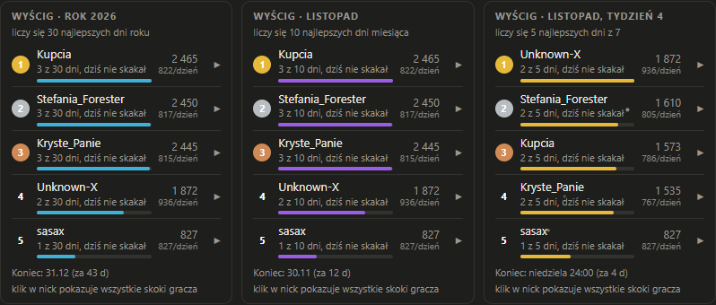
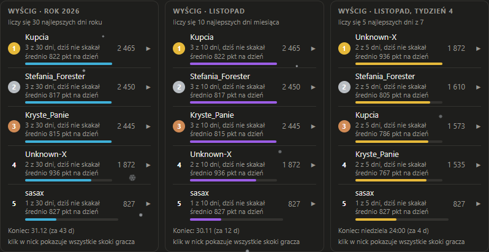

Prawdziwe wyniki z dziś. Średnia to punkty podzielone przez dni, które się liczą (gdy ktoś ma więcej dni, niż liczy wyścig, dzielę tylko przez liczone). Białe kropki to płatki z dekoracji strony, nie część wersji.


